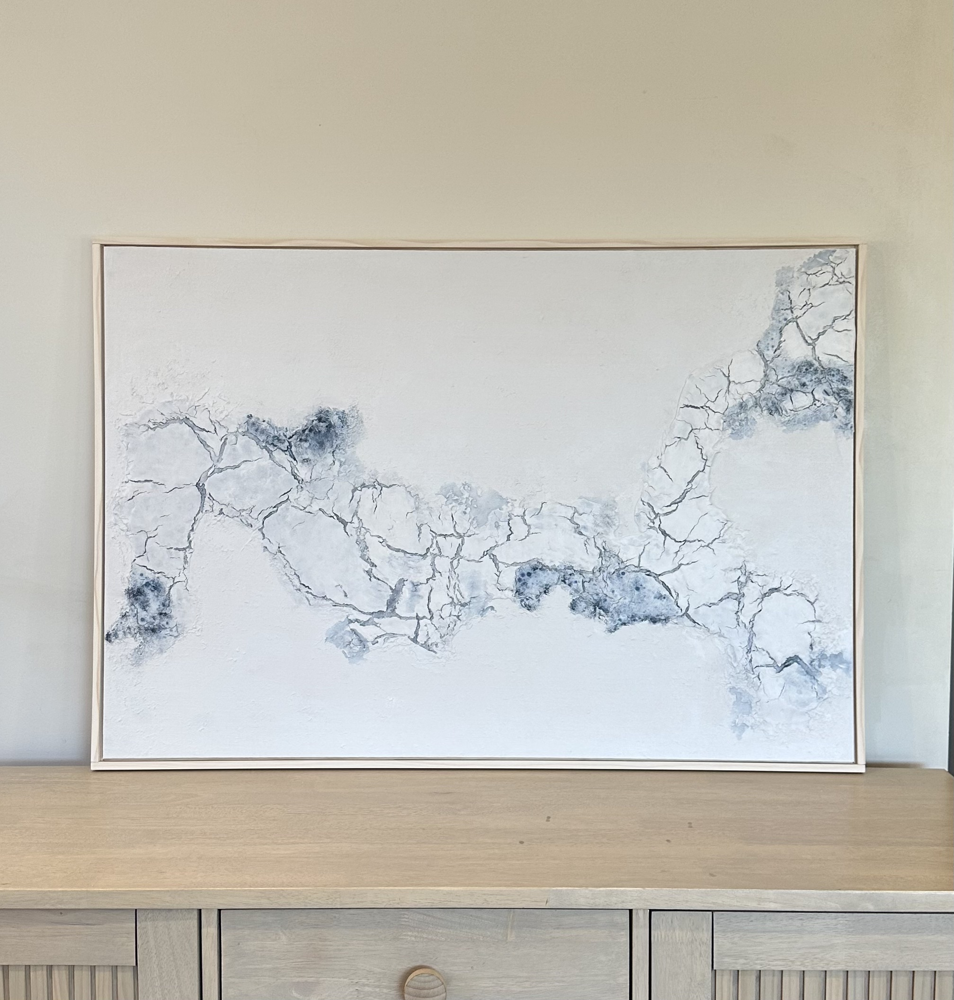
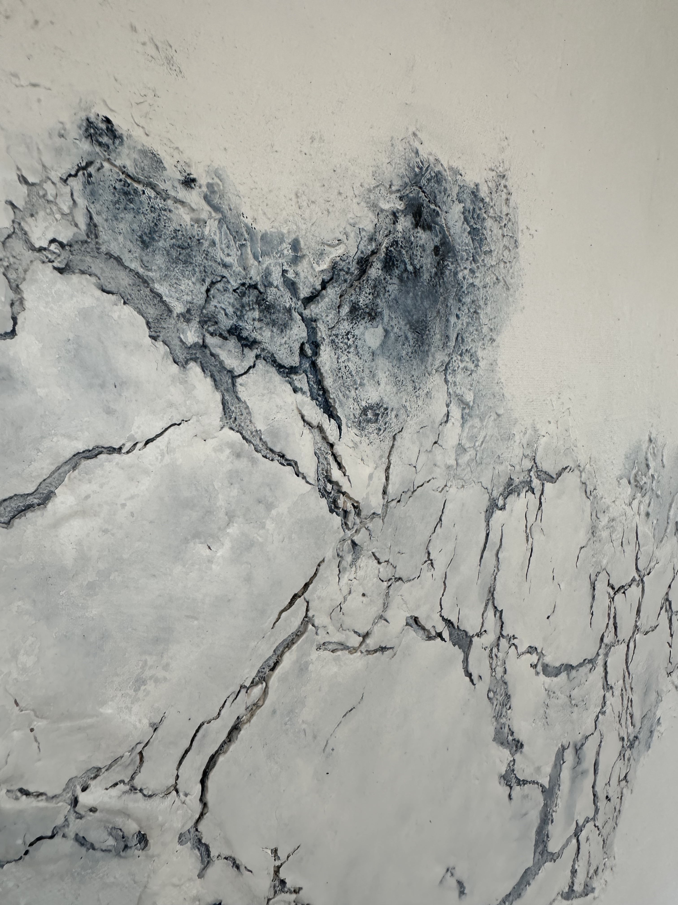
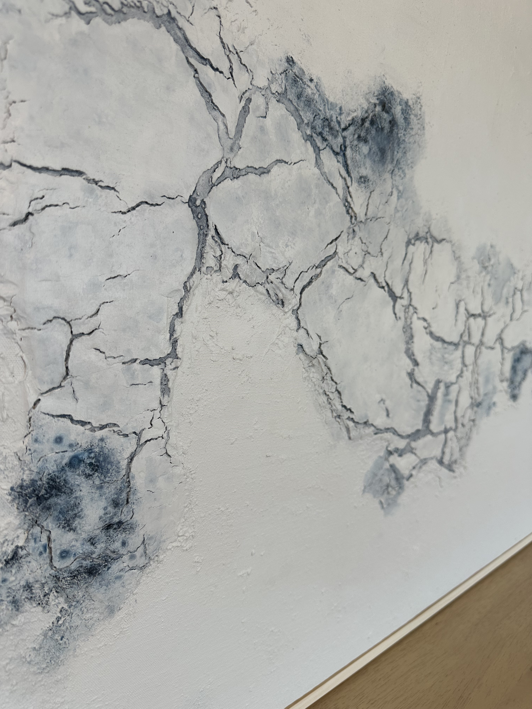

Internal Connections
Mixed media on board | 790 × 1135 mm | Framed
AVAILABLE
$895 AUD
Enquire about this work

Internal Connections explores the invisible pathways that hold us together beneath the surface. Fractured textures move across the work like fault lines, breaking apart and reconnecting through soft layers of white and smoky Payne’s Grey. Some areas remain quiet and open, while others carry evidence of rupture, residue and repair.
The piece reflects the complexity of connection — within ourselves, between past and present, and between the parts of us that can feel broken yet remain linked. Rather than hiding its cracks, Internal Connections allows them to become part of the structure, revealing strength not as perfection, but as continuity through change.
Additional views


